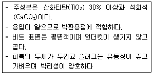
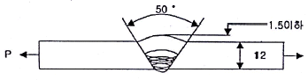
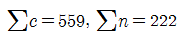

용접기능장 (2013-07-21 기출문제)
1과목: 임의구분
1. 피복 아크 용접봉의 피복제에 대하여 설명한 것 중 틀린 것은?
- 저수소계를 제외한 다른 피복 아크 용접봉의 피복제는 아크발생 시 탄산(CO2)가스와 수증기(H2O)가 가장 많이 발생한다.
- 아크 안정제는 아크열에 의하여 이온화가 되어 아크전압을 강화시키고 이에 의하여 아크를 안정시킨다.
- 가스 발생제는 중성 또는 환원성가스를 발생하여 용접부를 대기로부터 차단하여 용융금속의 산화 및 질화를 방지하는 작용을 한다.
- 슬래그 생성제는 용융점이 낮은 슬래그를 만들어 용융 금속의 표면을 덮어서 산화나 질화를 방지하고 용착 금속의 냉각속도를 느리게 한다.
(정답률: 85%)

2. 정격 2차 전류가 300A, 정격사용률이 40%인 용접기로 180A로 용접할 때, 허용사용률(%)은?
- 약 111%
- 약 101%
- 약 91%
- 약 121%
(정답률: 76%)
3. 가스 절단시 양호한 절단면을 얻기 위한 조건이 아닌 것은?
- 드래그(drag)가 가능한 클 것
- 절단면 표면의 각이 예리할 것
- 슬래그 이탈이 양호할 것
- 절단면이 평활하여 노치 등이 없을 것
(정답률: 87%)
4. 다음 중 가스 가우징용 토치에 대한 설명으로 옳은 것은?
- 팁 끝은 일직선으로 되어 있다.
- 산소 분출공이 일반 절단용과 매우 차이가 크다.
- 토치 본체는 일반 절단용과 매우 차이가 크다.
- 예열 화염의 구멍은 산소 분출구멍의 상하 또는 둘레에 만들어져 있다.
(정답률: 74%)
5. 용해 아세틸렌을 취급할 때 주의할 사항으로 틀린 것은?
- 저장 장소는 통풍이 잘되어야 한다.
- 용기가 넘어지는 것을 예방하기 위하여 용기는 뉘어서 사용한다.
- 화기에 가깝거나 온도가 높은 장소에는 두지 않는다.
- 용기 주변에 소화기를 설치해야 한다.
(정답률: 92%)
6. 용접에서 용융금속의 이행방식 분류에 속하지 않는 것은?
- 연속형
- 글로뷸러형
- 단락형
- 스프레이형
(정답률: 75%)
7. 내용적인 40L인 산소용기의 고압게이지에 압력이 90kgf/cm2로 나타났다면 가변압식 토치 팁(tip) 300번으로 몇 시간 사용할 수 있는가?
- 3.5
- 7.5
- 12
- 20
(정답률: 84%)
8. 직류용접에서 정극성과 비교한 역극성의 특징은?
- 비드의 폭이 넓다.
- 모재의 용입이 깊다.
- 용접봉의 녹음이 느리다.
- 용접열이 용접봉쪽 보다 모재쪽에 많이 발생된다.
(정답률: 55%)
9. 다음 [보기]는 어떤 용접봉의 특성을 나타낸 것인가?

- 저수소계
- 라임티타니아계
- 고셀룰로오스계
- 일미나이트계
(정답률: 67%)
10. 용접작업에 영향을 주는 요소 중 아크길이가 너무 길 때 용접부의 특징에 대한 설명으로 틀린 것은?
- 스패터가 많고 기공이 생긴다.
- 용착금속이 산화나 질화가 된다.
- 비드 표면이 거칠고 아크가 흔들린다.
- 비드 폭이 좁고 볼록하다.
(정답률: 76%)
11. 아크용접에서 아크길이가 너무 길 때, 용접부에 미치는 현상으로 틀린 것은?
- 스패터가 많다.
- 아크 실드효과가 떨어진다.
- 열집중이 많다.
- 기공이 생긴다.
(정답률: 81%)
12. 자동가스 절단에서 절단면에 대한 설명으로 맞는 것은?
- 절단속도가 빠를 경우 드래그가 작다.
- 절단속도가 느린 경우 표면이 과열되어 위 가장자리가 둥글게 된다.
- 산소 중에 불순물이 증가하면 슬래그의 이탈성이 좋아진다.
- 팁의 위치가 높을 때에는 예열범위가 좁아진다.
(정답률: 71%)
13. 아크에어 가우징의 장점에 해당되지 않는 것은?
- 가스 가우징에 비해 작업 능률이 2~3배 높다.
- 용융금속에 순간적으로 불어내므로 모재에 악영향을 주지 않는다.
- 소음이 매우 심하다.
- 용접 결함부를 그대로 밀어 붙이지 않는 관계로 발견이 쉽다.
(정답률: 81%)
14. 피복아크용접의 품질에 영향을 주는 요소가 아닌 것은?
- 용접전류
- 용접기의 사용률
- 용접봉 각도
- 용접속도
(정답률: 89%)
15. 보통 가스 절단시 판두께 12.7mm의 표준 드래그 길이는 몇 mm인가?
- 2.4
- 5.2
- 5.6
- 6.4
(정답률: 76%)
16. 그래비티 용접의 설명으로 틀린 것은?
- 철분계 용접봉을 사용한다.
- 한사람이 여러 대(2~7대)의 용접기를 조작할 수 있다.
- 중력을 이용한 용접법이다.
- 스프링으로 압력을 가하여 자동적으로 용접봉이 모재에 밀착되도록 설계된 특수 홀더를 사용한다.
(정답률: 61%)
17. 이산화탄소 아크 용접 20L/min의 유량으로 연속사용할 경우 액체 이산화탄소 25kg 용기는 대기 중에서 가스량이 약 12700L라 할 때 약 몇 시간 정도 사용할 수 있는가?
- 6.6
- 10.6
- 15.6
- 20.6
(정답률: 60%)
18. 다음 용접법 중 가장 두꺼운 판을 용접할 수 있는 것은?
- 이산화탄소 아크용접
- 일렉트로 슬래그용접
- 불활성가스 아크용접
- 스터드용접
(정답률: 85%)
19. 납땜에 대한 설명 중 틀린 것은?
- 비철금속 접합에 이용할 수 있다.
- 납은 접합할 금속보다 높은 온도에서 녹아야 한다.
- 용접용 땜납으로 경압을 사용한다.
- 일반적으로 땜납은 합금으로 되어 있다.
(정답률: 79%)
20. 스테인리스강의 용접 방법에 대한 설명으로 옳은 것은?
- 용접 전류는 연강 용접 시 보다 약 10% 높게 용접한다.
- 오스트나이트계 용접 시 고온에서 탄화물이 형성될 수 있다.
- 마르텐사이트계는 열에 의해 경화되지 않는다.
- 오스테나이트계 용접 시 예열을 800℃로 높이고 시간은 길게 한다.
(정답률: 54%)
2과목: 임의구분
21. 테르잇 용접에서 산화철과 알루미늄이 반응할 때 화학반응을 통하여 발생되는 온도는 약 몇 도(℃) 인가?
- 800
- 2800
- 4000
- 5800
(정답률: 75%)
22. 점 용접기를 사용하여 서로 다른 종류 금속을 납땜할 때 가장 적합한 방법은?
- 인두납땜(soldering-iron brazing)
- 가스납땜(gas brazing)
- 저항납땜(resistance brazing)
- 노내납땜(furance brazing)
(정답률: 72%)
23. 미그(MIG)용접의 와이어(wire)송급장치가 아닌 것은?
- 푸시(push)방식
- 푸시-아웃(push-out)방식
- 풀(pull)방식
- 푸시-풀(push-pull)방식
(정답률: 85%)
24. 불활성가스 아크 용접으로 스테인리스강을 용접할 때의 설명 중 잘못 된 것은?
- 깊은 용입을 위하여 직류정극성을 사용한다.
- 전극봉은 지르코놈 텅스텐을 사용한다.
- 전극의 끝은 뾰족할수록 전류가 안정되고 열집중성이 좋다.
- 보호가스는 아르곤가스를 사용하며 낮은 유속에서도 우수한 보호작용을 한다.
(정답률: 65%)
25. 티그(TIG) 용접 시 불활성 가스를 용접 중은 물론 용접 전ㆍ후에도 약간 유출시켜야하는 이유를 설명한 것 중 틀린 것은?
- 용접 전에 가스 유출은 도관이나 토치에 공기를 배출시키기 위함이다.
- 용접후에 가스 유출은 가열된 상태의 용접부가 산화 혹은 질화되는 것을 방지하기 위함이다.
- 용접 후에 가스 유출은 가열된 텅스텐 전극의 산화 방지를 하기 위함이다.
- 용접 전에 가스 유출은 세라믹 노즐을 보호하기 위함이다.
(정답률: 76%)
26. 탄산가스 아크 용접에서 전진법의 특징이 아닌 것은?
- 용접선이 잘 보이므로 운봉을 정확하게 할 수 있다.
- 용융금속이 앞으로 나가지 않으므로 깊은 용입을 얻을 수 있다.
- 스패터가 비교적 많으며 진행 방향쪽으로 흩어진다.
- 비드 높이가 낮고 평탄한 비드가 형성된다.
(정답률: 72%)
27. 서브머지드 아크 용접기에 사용되는 용제(flux)의 종류가 아닌 것은?
- 용융형
- 고온 소결형
- 저온 소결형
- 가입형
(정답률: 67%)
28. 서브머지드 아크 용접의 장점에 해당하는 것은?
- 자유곡선 용접이 가능하다.
- 용착금속의 품질이 양호하다.
- 용접흠 가공이 정밀해야 한다.
- 용접자세의 제한을 받는다.
(정답률: 78%)
29. 가스용접 작업에서 팁 끝이 모재에 닿아 순간적으로 팁 끝이 막히면서 팁의 과열, 사용가스의 압력이 부적당할 때 팁 속에서 폭발음이 나면서 불꽃이 꺼졌다가 다시 나타나는 현상은?
- 역류
- 역화
- 인화
- 산화
(정답률: 81%)
30. 용접부는 급격한 열팽창 및 응고수축으로 인한 결함발생 우려가 있어 예열을 실시한다. 그 목적으로 거리가 먼 것은?
- 수축응력 감소
- 용착금속 및 열영향부 경화방지
- 비드 밑 균열방지
- 내부식성 향상
(정답률: 77%)
31. 다음 주조용 알루미늄 합금 중 Alcoa(알코아) No.12 합금의 종류는?
- Al-Ni계 합금
- Al-Si계 합금
- Al-Cu계 합금
- Al-Zn계 합금
(정답률: 73%)
32. 오스테나이트 스테인리스강의 용접 시 유의해야 할 사항 중 틀린 것은?
- 짧은 아크 길이를 유지한다.
- 층간 온도는 320℃이상을 유지한다.
- 아크를 중단하기 전에 크레이터 처리를 한다.
- 낮은 전류값으로 용접을 하여 용접 입열을 억제한다.
(정답률: 62%)
33. 열전대 중 가장 높은 온도를 측정할 수 잇는 것은?
- 백금-백금로듐
- 철-콘스탄탄
- 크로멜-알루멜
- 구리-콘스탄탄
(정답률: 79%)
34. 절삭되어 나오는 칩 처리의 능률, 공정의 단축, 가공 단가의 저렴화 등을 고려하여 탄소강에 S, Pb, P, Mn을 첨가한 구조용 강은?
- 강인강
- 스프링강
- 표면 경화용강
- 쾌삭강
(정답률: 79%)
35. 침탄, 질화, 고주파 담금질 등으로 내마모성과 인성이 요구되는 기계적 성질을 개선하는 열처리는?
- 뜨임
- 표면경화
- 항온 열처리
- 담금질
(정답률: 45%)
36. 스테인리스강의 입계(粒界)부식 방지를 위한 가장 적합한 설명은?
- 용접 후 입계 부식 온도를 서서히 통과할 수 있도록 한다.
- 모재가 STS 321, STS 347 등의 용접에 사용한다.
- 용접 후 서냉시킨다.
- 용접 후 1100℃에서 응력제거를 위하여 열처리한다.
(정답률: 70%)
37. 흑연봉을 양극으로 하고 WC, TiC등의 초경합금을 음극으로 하여 공구표면에 불꽃을 일으켜 그 열로 주위를 경화시키는 방법은?
- 고주파담금질
- 화염경화법
- 금속침투법
- 방전경화법
(정답률: 51%)
38. 고망간강의 주요 성분으로 다음 중 가장 적합한 것은?
- C0.2~0.8%, Mn 11~14%
- C0.2~0.8%, Mn 5~10%
- C0.9~1.3%, Mn 5~10%
- C0.9~1.3%, Mn 10~14%
(정답률: 60%)
39. 백주철을 풀림 열처리에서 탈탄 또는 흑연화 방법으로 제조한 것은?
- 칠드 주철
- 구상 흑연 주철
- 가단 주철
- 미하나이트 주철
(정답률: 63%)
40. 강을 담금질할 때 가장 냉각속도가 빠른 것은?
- 식염수
- 기름
- 비눗물
- 물
(정답률: 73%)
3과목: 임의구분
41. 일반적으로 탄소강의 가공 시 특히 가공성을 요구하는 경우에 가장 적합한 탄소 함유량의 범위는?
- 0.⑤~0.3%C
- 0.45~0.6%C
- 0.76~1.2%C
- 1.34~1.9%C
(정답률: 74%)
42. 코발트를 주성분으로 하는 주조경질합금의 대표적 강으로 주로 절삭공구에 사용되는 것은?
- 고속도강
- 스텔라이트
- 화이트 메탈
- 합금 공구강
(정답률: 67%)
43. 경도측정 방법 중 압입 경도시험기가 아닌 것은?
- 쇼어 경도계
- 브리넬 경도계
- 로크웰 경도계
- 비커어즈 경도계
(정답률: 62%)
44. 용접 변형을 방지하는 방법 중 냉각법이 아닌 것은?
- 수냉동판 상용법
- 살수법
- 피닝법
- 석면포 사용법
(정답률: 81%)
45. 초음파 탐상시험의 장점이다. 틀린 것은?
- 표면에 아주 가까운 얕은 불연속을 검출할 수 있다.
- 고감도이므로 아주 작은 결함의 검출도 가능하다.
- 휴대가 가능하다.
- 검사 시험체의 한 면에서도 검사가 가능하다.
(정답률: 67%)
46. 용접 잔류응력을 경감하기 위한 방법이 아닌 것은?
- 용착금속의 양을 될 수 있는 대로 적게 한다.
- 예열을 이용한다.
- 적당한 용착법과 용접순서를 선택한다.
- 용접 전에 억제법, 역변형법 등을 이용한다.
(정답률: 72%)
47. 로봇의 구성에서 구동부와 제어부를 가동시키기 위한 에너지를 동력원이라 하고 에너지를 기계적인 움직임으로 변환하는 기기의 명칭은?
- 액추에이터
- 머니퓰레이터
- 교시박스
- 시퀀스 제어
(정답률: 77%)
48. V형 맞대기 피복아크 용접시 슬래그 섞임의 방지대책이 아닌 것은?
- 슬래그를 깨끗이 제거한다.
- 용접 전류를 약간 세게 한다.
- 용접 이음부의 루트 간격을 좁게 한다.
- 봉의 유지각도를 용접 방향에 적절하게 한다.
(정답률: 80%)
49. 저온균열의 발생 원인으로 틀린 것은?
- 와이어 흡습
- 예열부족
- 저 입열용접
- 심한 구속
(정답률: 27%)
50. 용접 보조기호 중 용접부의 다듬질 방법을 표시하는 기호 설명으로 잘못된 것은?
- P - 치핑
- G - 연삭
- M - 절삭
- F - 지정없음
(정답률: 69%)
51. [그림]과 같이 두께 12mm, 폭 100mm의 강판에 맞대기 용접이음을 할 때 이음효율 η=0.8로 하면 인장력(P)는 얼마인가? (단, 판의 최저인장강도는 420MPa이고 안전율은 4로 한다.)

- 100200 N
- 10080 N
- 108800 N
- 100800 N
(정답률: 53%)
52. 지그(JIG)의 사용목적에 부합되지 않는 것은?
- 제품의 정밀도가 향상되고 대량생산에서 호환성 있는 제품이 만들어진다.
- 불량율이 감소되고 미숙련공의 작업을 용이하게 한다.
- 제작상의 공정수가 감소하고 생산능률을 향상시킨다.
- 비교적 본 기계장비에 비해 소형 경량이며, 큰 출력을 발생시키는데 사용된다.
(정답률: 83%)
53. 용접이음 설계 시 일반적인 주의사항이 아닌 ㅣ것은?
- 가급적 능률이 좋은 아래보기 용접자세를 많이 할 수 있도록 설계한다.
- 될 수 있는 대로 용접량이 많은 홈 형상을 선택한다.
- 용접이음을 1개소로 집중시키거나 너무 접근하여 설계하지 않는다.
- 안전상 필릿 용접보다 맞대기 용접을 주로 한다.
(정답률: 81%)
54. 용접 순서를 결정하는 방법으로 옳은 것은?
- 같은 평면 안에 많은 이음이 있을 때 수축량이 큰 이음은 가능한 지그로 고정한다.
- 물품에 대하여 처음부터 끝까지 일률적으로 용접을 진행하다.
- 수축이 작은 이음을 가능한 먼저하고 수축이 큰 이음을 뒤에 용접한다.
- 용접물의 중립축에 대하여 수축력 모우멘트의 합이 “0”이 되도록 한다.
(정답률: 59%)
55. 모집단으로부터 공간적, 시간적으로 간격을 일정하게 하여 샘플링하는 방식은?
- 단순랜덤샘플링(simple randow sampling)
- 2단계샘플링(two-stage sampling)
- 취락샘플링(cluster sampling)
- 계통샘플링(systematic sampling)
(정답률: 74%)
56. 예방보전(Preventive Maintenance)의 효과가 아닌 것은?
- 기계의 수리비용이 감소한다.
- 생산시스템의 신뢰도가 향상된다.
- 고장으로 인한 중단시간이 감소한다.
- 잦은 정비로 인해 제조원단위가 증가한다.
(정답률: 81%)
57. 제품공정도를 작성할 때 사용되는 요소(명칭)가 아닌 것은?
- 가공
- 검사
- 정체
- 여유
(정답률: 79%)
58. 부적합수 관리도를 작성하기 위해

를 구하였다. 시료의 크기가 부분군마다 일정하지 않기 때문에 u관리도를 사용하기로 하였다. n=10일 경우 u관리도의 UCL 값은 약 얼마인가?- 4.023
- 2.518
- 0.502
- 0.252
(정답률: 41%)
59. 작업방법 개선의 기본 4원칙을 표현한 것은?
- 층별-랜덤-재배열-표준화
- 배제-결합-랜덤-표준화
- 층별-랜덤-표준화-단순화
- 배제-결합-재배열-단순화
(정답률: 63%)
60. 이항분포(Binomial distribution)의 특징에 대한 설명으로 옳은 것은?
- P=0.01일 때는 평균치에 대하여 좌ㆍ우 대칭이다.
- P≤0.1이고, nP=0.1~10일 때는 포아송 분포에 근사한다.
- 부적합품의 출현 갯수에 대한 표준편차는 D(x)=nP이다.
- P≤0.5이고, nP≤5일 때는 정규 분포에 근사한다.
(정답률: 65%)